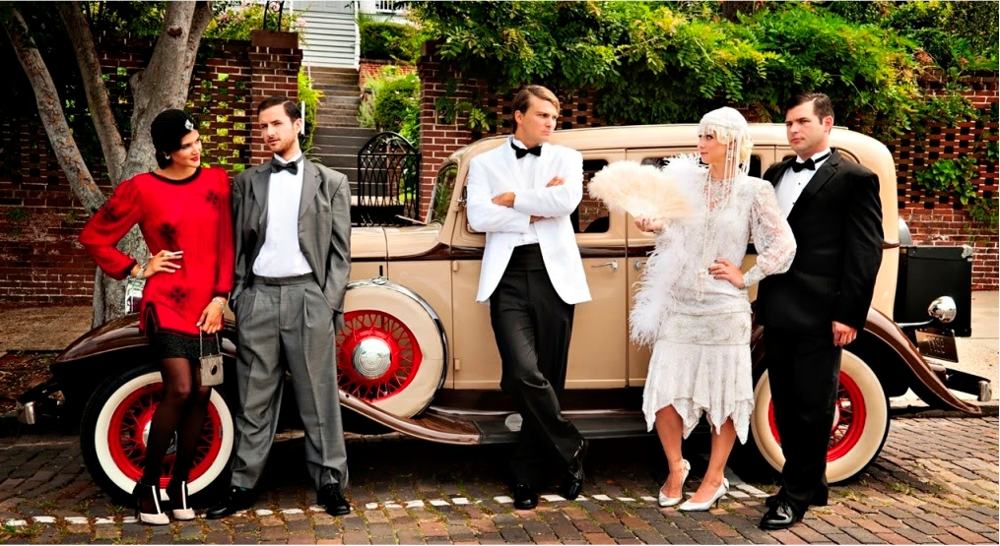
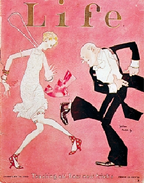

ontstond
er
overproductie,
omdat
er
veel
vraag
naar
bepaalde
producten
was.
Er
werd
ondanks
de
welvaart
veel
geld
geleend,
hierover
werden
geen
afspraken
gemaakt
en
mensen
dachten
gewoon
dat
ze
het
maar
terug
kregen.
De
overheid
stimuleerde
de
mensen
om
uit
te
geven
en
zo
gaven
mensen
steeds
meer
en
meer
geld
uit,
wat
dus
leidde
tot
het
lenen
van
geld.
Banken
dachten
dat
er
ge-
noeg
geld
was
en
gaven
dus
al
deze
leningen,
zonder
re-
serves op te bouwen.
Ook
ontwikkelde
de
film
zich
in
de
jaren
20
erg
snel,
in
deze
jaren
kwamen
namelijk
de
films
met
geluid.
Het
geluid
was
op
dezelfde
band
als
de
film
opgenomen
en
dus
door
de
acteurs
zelf
gesproken,
een
enorme
“rev-
olutie”
binnen
de
filmwereld.
Door
de
vele
vrije
tijd
en
de
groeiende
welvaart,
gingen
mensen
dan
ook
vaak
naar
de
bioscoop.
De
films
duurde
namelijk
ook
langer
dan
voorheen,
eerst
duurde
de
films
zo’n
15
minuten
en
nu
kon
je
met
een
paar
films
de
avond
vullen.
Zo
kwam
de
eerste
Tarzan
film
uit
die
we
tot
op
de
dag
van
vandaag
nog
kennen
en
kijken
in
een
vernieuwende
versie.
Tarzan
The
Mighty
kwam
uit
in
1928
en
was
geregisseerd
door
Jack
Nelson
en
Ray
Taylor.
Meerdere
films
die
gemaakt
zijn in de jaren 20:
Braveheart
1925
:
geregis-
seerd
door
Alan
Hale
en
viel
nog
onder
de
zogeheten
“silent films”.
Cupid’s
Victory
1925:
geregisseerd
door
Billy
West
en
viel
onder
de
categorie
“silent
films”,
maar
was
En-
gels ondertiteld.
A
Woman
Off
Affairs
1928:
geregisseerd
door
Clarence
Brown
en
viel
onder
de
cate-
gorie
“silent
films”,
maar
was
Engels ondertiteld.
The
Donovan
Affair
1929:
geregisseerd
door
Frank
Capra
en
werd
in
het
Engels
gesproken,
de
film
kwam
ook
in
Nederland
uit
onder
de
naam
“Wie
Doodde
Dono-
van?”.
Gun
Law
1929:
geregisseerd
door Robert de Lacy.
The
Girl
Of
The
Golden
West
1923:
geregisseerd
door
Edwin
Carewe
en
viel
onder
de
categorie
“silent
films”.

